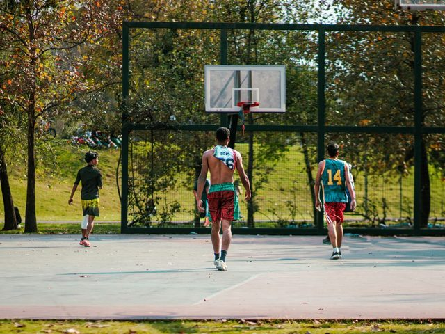

VOCABULARY · LALA WORD UNIT 4
The Talking Shower．一字多義（四）
shower 是淋浴，也是「陣雨」；face 是臉，也可以當動詞「面對」。這個單元有 6 個主題單字、11 個更多單字。
共 17 個單字．點 🔊 聽發音
1showern. / v.
淋浴；陣雨；大量地給予
shower - showered - showered - showering
- 1n.淋浴 take a shower 洗澡；shower cap 浴帽I take a shower every night.我每天晚上淋浴。
- 2n.陣雨There will be showers this afternoon.今天下午會有陣雨。
- 3v.大量地給予 shower + 人 + with + 物 送給某人很多…Grandma showered us with gifts.奶奶送我們好多禮物。
2workv. / n.
工作；（機器）運轉；運動健身（work out）；起作用；有效；作品；著作
work - worked - worked - working
- 1v.工作My dad works at a hospital.我爸爸在醫院工作。
- 2v.（機器）運轉The TV doesn't work. Can you fix it?電視壞了，你可以修嗎？
- 3v.運動健身（work out） work out 健身She works out at the gym every morning.她每天早上去健身房運動。
- 4v.起作用；有效This medicine really works.這個藥真的有效。
- 5n.作品；著作This painting is a famous work of art.這幅畫是有名的藝術作品。

3answerv. / n.
回答；接（電話）；應（門）；答案；回覆
answer - answered - answered - answering
- 1v.回答Please answer my question.請回答我的問題。
- 2v.接（電話）；應（門） answer the phone 接電話；answer the door 應門Can you answer the phone? I'm busy.你可以接電話嗎？我在忙。
- 3n.答案 the answer to …的答案Do you know the answer to question 5?你知道第五題的答案嗎？
- 4n.回覆I sent her a message, but I got no answer.我傳訊息給她，但沒有回覆。
4strongadj.
強壯的；有力的；強勁的（風、水流）；濃的（氣味、味道）；堅固的
strong - stronger - strongest
- 1adj.強壯的；有力的My brother is strong. He can carry the big box.我哥哥很強壯，他搬得動這個大箱子。
- 2adj.強勁的（風、水流）The strong wind blew my hat away.強風把我的帽子吹走了。
- 3adj.濃的（氣味、味道）This coffee is too strong for me.這杯咖啡對我來說太濃了。
- 4adj.堅固的We need a strong box for the books.我們需要一個堅固的箱子裝書。

5questionn. / v.
問題；試題；懷疑；詢問；質問
question - questioned - questioned - questioning
- 1n.問題；試題May I ask you a question?我可以問你一個問題嗎？
- 2n.懷疑There is no question that he is the best player.毫無疑問，他是最好的球員。
- 3v.詢問；質問The police questioned the man for an hour.警察盤問那個男人一個小時。
6facen. / v.
臉；表情；面子；表面；正面；面對；面向；朝向
face - faced - faced - facing
- 1n.臉Wash your face before breakfast.吃早餐前先洗臉。
- 2n.表情 pull a long face 板著臉Why the long face? What happened?幹嘛板著臉？發生什麼事？
- 3n.面子 lose face 丟臉；save face 保住面子He didn't want to lose face in front of his friends.他不想在朋友面前丟臉。
- 4n.表面；正面They climbed the north face of the mountain.他們攀爬山的北面。
- 5v.面對 face the music 承擔後果；Let's face it. 面對現實吧。You have to face the problem.你必須面對這個問題。
- 6v.面向；朝向My bedroom faces the sea.我的房間面向大海。

7brushn. / v.
刷子；畫筆；灌木叢；刷；輕輕擦過；塗（醬汁）
brush - brushed - brushed - brushing
- 1n.刷子；畫筆 toothbrush 牙刷；hairbrush 梳子I need a brush to paint the door.我需要一支刷子來漆門。
- 2n.灌木叢 brush fire 灌木叢火災A rabbit ran into the brush.一隻兔子跑進灌木叢裡。
- 3v.刷Brush your teeth before bed.睡前要刷牙。
- 4v.輕輕擦過 brush against 輕碰；brush past 擦身而過A cat brushed against my leg.一隻貓輕輕擦過我的腳。
- 5v.塗（醬汁）Brush some oil on the bread.在麵包上刷一點油。

8courtn.
球場；法院；法庭
複數 courts
- 1n.球場The students are playing on the basketball court.學生們在籃球場上打球。
- 2n.法院；法庭The man had to go to court.那個男人必須上法院。
9evenadv. / adj.
甚至；更加（比較）；即使（even if）；儘管（even though）；平坦的；均等的；偶數的
- 1adv.甚至Even my grandma can use a smartphone.連我奶奶都會用智慧型手機。
- 2adv.更加（比較）Today is even hotter than yesterday.今天比昨天更熱。
- 3adv.即使（even if） even if 即使Even if it rains, we will go.即使下雨，我們也會去。
- 4adv.儘管（even though） even though 儘管Even though he was sick, he went to school.儘管他生病了，他還是去上學。
- 5adj.平坦的；均等的The road is not even. Be careful.路面不平，小心。
- 6adj.偶數的Two, four and six are even numbers.二、四、六是偶數。

10exercisev. / n.
運動；運動；行使（權利）；練習；習題
exercise - exercised - exercised - exercising
- 1v.運動I exercise for thirty minutes every day.我每天運動三十分鐘。
- 2n.運動 do / take exercise 運動Swimming is good exercise.游泳是很好的運動。
- 3v.行使（權利）Adults can exercise their right to vote.成年人可以行使投票權。
- 4n.練習；習題Do the exercises on page 20.做第二十頁的習題。

11eyen. / v.
眼睛；注目；注視；打量
eye - eyed - eyed - eyeing
- 1n.眼睛She has big brown eyes.她有一雙棕色的大眼睛。
- 2n.注目 all eyes are on 大家都注意著…All eyes were on the new student.所有人都在注意那位新同學。
- 3v.注視；打量The boy eyed the last piece of cake.那個男孩盯著最後一塊蛋糕看。

12likev. / prep.
喜歡；想要（would like）；像；例如
like - liked - liked - liking
- 1v.喜歡I like ice cream very much.我非常喜歡冰淇淋。
- 2v.想要（would like） would like to + V 想要I would like a glass of water, please.我想要一杯水。
- 3prep.像 look / sound like 看起來／聽起來像You look like your mother.你長得像你媽媽。
- 4prep.例如I like fruits like apples and grapes.我喜歡蘋果、葡萄之類的水果。
13onceadv. / conj.
一次；曾經；一旦…就…
- 1adv.一次 once in a while 偶爾I go swimming once a week.我一星期游泳一次。
- 2adv.曾經There was once a big tree here.這裡曾經有一棵大樹。
- 3conj.一旦…就…Once you start, you can't stop.你一開始就停不下來。

14paintn. / v.
油漆；顏料；油漆；（用顏料）畫
paint - painted - painted - painting
- 1n.油漆；顏料Wet paint! Don't touch.油漆未乾，請勿觸摸。
- 2v.油漆We painted the fence white.我們把籬笆漆成白色。
- 3v.（用顏料）畫Amy likes to paint flowers.Amy 喜歡畫花。

15thenadj. / adv.
當時；然後；接著；那麼；既然如此
- 1adj.當時 since then 從那時起；just then 就在那時I met him in 2020, and we have been friends since then.我 2020 年認識他，從那時起我們就是朋友。
- 2adv.然後；接著Wash the rice, then cook it.先洗米，然後煮。
- 3adv.那麼；既然如此You're tired? Then go to bed.你累了？那就去睡覺吧。

16thickadj.
厚的；粗的；濃的（湯、霧）；茂密的
thick - thicker - thickest
- 1adj.厚的；粗的This dictionary is very thick.這本字典很厚。
- 2adj.濃的（湯、霧）The fog was so thick that we couldn't see the road.霧濃到我們看不見路。
- 3adj.茂密的 be thick with 布滿The girl has thick black hair.那個女孩有濃密的黑髮。

17topn. / adj.
頂部；上衣；頂尖的；最好的
複數 tops
- 1n.頂部 on the top of 在…最上面We climbed to the top of the hill.我們爬到山丘頂上。
- 2n.上衣I like your yellow top.我喜歡你的黃色上衣。
- 3adj.頂尖的；最好的She is one of the top students in our school.她是我們學校最頂尖的學生之一。
FOCUS
一字多義：最常見 vs. 容易忽略的意思
| 單字 | 最常見的意思 | 容易忽略的意思 |
|---|---|---|
| shower | 淋浴 | 陣雨；大量地給 |
| work | 工作 | （機器）運轉；有效；作品 |
| face | 臉 | 面子；面對；朝向 |
| brush | 刷子；刷 | 灌木叢；輕輕擦過 |
| court | 球場 | 法院 |
| even | 甚至 | 平坦的；偶數的 |
| eye | 眼睛 | 注視；打量 |
| top | 頂部 | 上衣；頂尖的 |
FOCUS
常用片語
| 片語 | 意思 | 例句 |
|---|---|---|
| take a shower | 洗澡 | I take a shower after dinner. |
| work out | 健身 | He works out three times a week. |
| answer the phone / door | 接電話／應門 | Can you answer the door? |
| lose face / save face | 丟臉／保住面子 | He didn't want to lose face. |
| even if / even though | 即使／儘管 | Even though it was late, he kept working. |
| once in a while | 偶爾 | Once in a while, we eat out. |
| would like to | 想要 | I would like to go to Japan. |